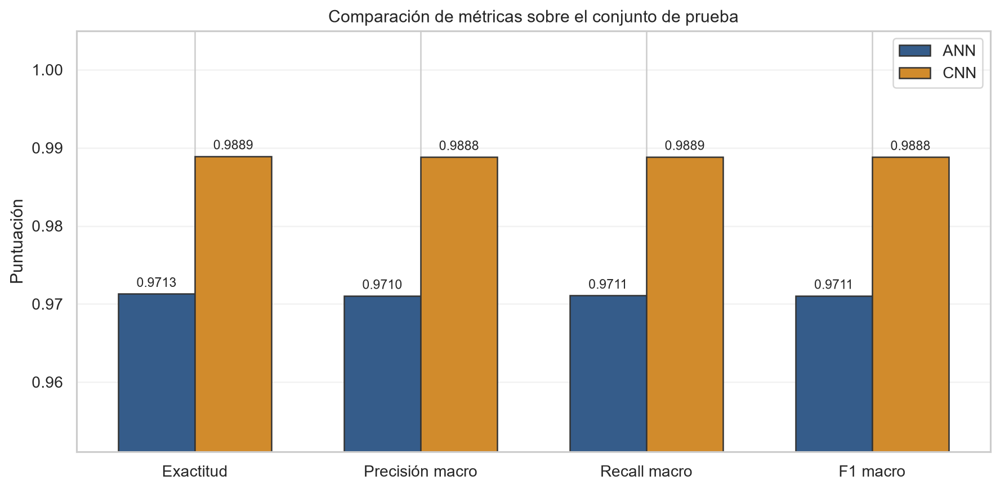
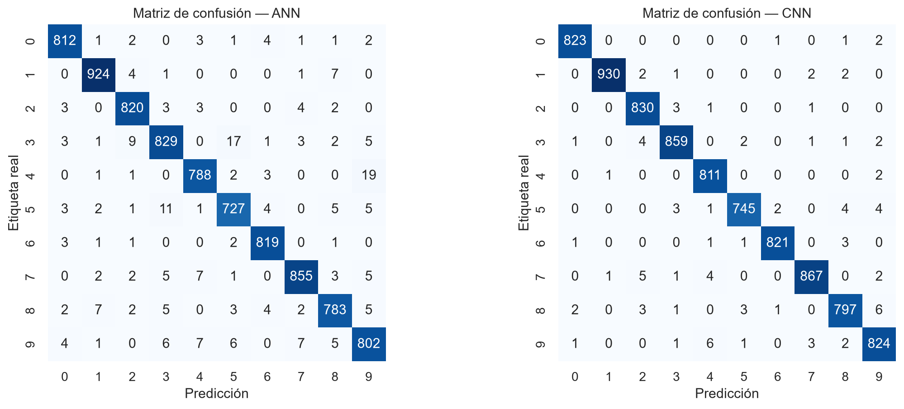

Se clasificaron dígitos manuscritos del 0 al 9 usando train.csv: 42,000 observaciones, una etiqueta y 784 intensidades de píxel. No se detectaron valores faltantes; los píxeles se encontraron en el rango esperado de 0 a 255.
Los datos se dividieron de forma estratificada: 33,600 imágenes (80%) para entrenamiento y 8,400 (20%) para prueba, con semilla 42. El conjunto de prueba se mantuvo intacto hasta la evaluación final.
Cada fila se normalizó a [0,1] y se reconstruyó mediante reshape como una imagen 28×28×1. La CNN recibió directamente estas matrices y conservó la vecindad espacial. La ANN recibió las mismas imágenes, pero una capa Flatten las convirtió internamente en vectores de 784 elementos.
Esta diferencia implementa la indicación de la clase 05: la red convolucional opera con la imagen bidimensional, mientras la red artificial requiere una representación aplanada.
Ambas redes se implementaron con TensorFlow/Keras, optimizador Adam, entropía cruzada categórica dispersa, lotes de 128, hasta 10 épocas y 10% de validación interna. Se utilizó parada temprana con restauración de los mejores pesos. Estas elecciones siguen el flujo de las clases 04 y 05.
| Modelo | Exactitud | Precisión macro | Recall macro | F1 macro | Log loss | Entrenamiento |
|---|---|---|---|---|---|---|
| ANN | 0.9713 | 0.9710 | 0.9711 | 0.9711 | 0.0971 | 5.17 s |
| CNN | 0.9889 | 0.9888 | 0.9889 | 0.9888 | 0.0407 | 81.75 s |

La mejora de la CNN no se limita a la exactitud: precisión, recall y F1 macro permanecen alrededor de 98.9%, lo que evidencia rendimiento equilibrado entre las diez clases. La ANN produjo 241 errores; sus confusiones más frecuentes fueron 4→9 (19 casos), 3→5 (17) y 5→3 (11). La CNN redujo el total a 93 errores; sus mayores confusiones individuales fueron 8→9 y 9→4 (seis casos cada una).

La CNN aprovecha patrones locales —bordes, trazos y combinaciones espaciales— mediante filtros aprendidos y conserva información que la ANN pierde al aplanar la imagen. El max pooling reduce dimensionalidad y retiene activaciones dominantes. Esto explica la mejora de 148 aciertos adicionales sobre el mismo conjunto de prueba.
La ganancia predictiva tiene un costo: la CNN utilizó 3.85 veces más parámetros y tardó 15.8 veces más en entrenarse en CPU. Sin embargo, su tiempo de inferencia para las 8,400 imágenes fue 0.58 s, adecuado para esta escala.
Como controles se verificaron estructura, rangos, etiquetas, ausencia de nulos, balance por clase y separación estratificada. Las métricas macro evitan que una clase numerosa domine la conclusión.
Reproducibilidad. Python 3.12; TensorFlow 2.21; pandas 3.0.5; NumPy 2.5.2; scikit-learn 1.9.0. El notebook ejecutado contiene código, salidas, curvas, reportes por clase y análisis de errores. Referencias principales: transcript clase 04.docx (arquitectura CNN) y transcript clase 05.docx (instrucciones del Laboratorio No. 4), consultadas sin modificación.